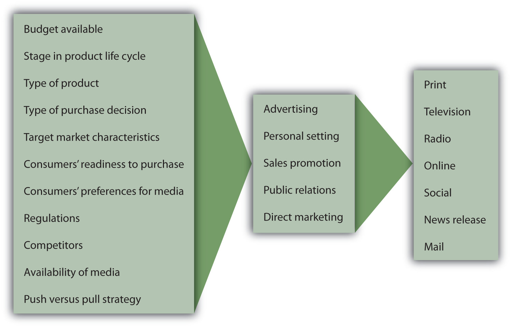
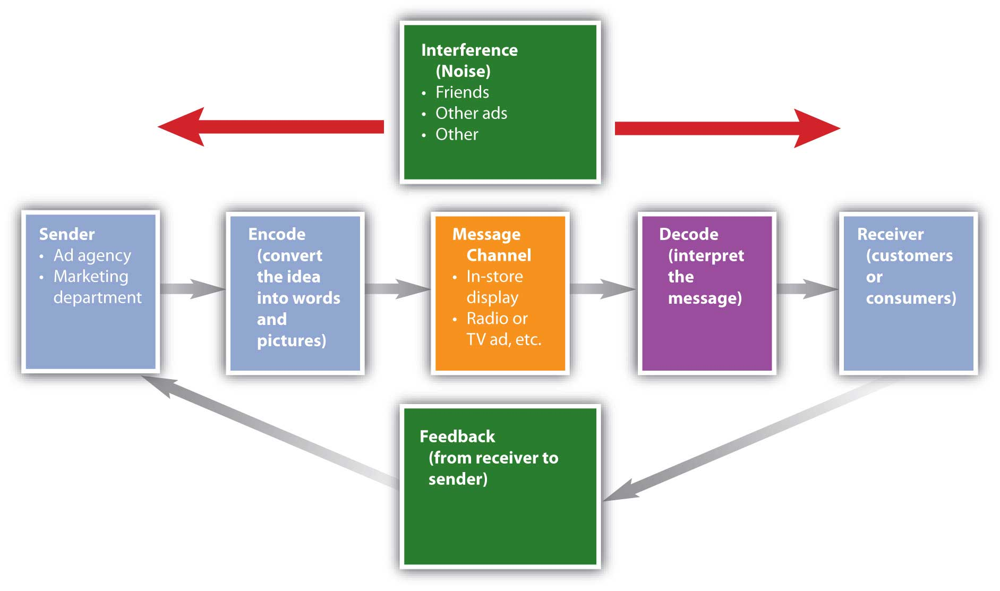

A marketing manager from one company might decide to focus on social media, whereas a marketing manager from another company might decide to focus her company’s efforts on television commercials. Why do companies select different types of media for what may be perceived as similar messages? As Figure 11.5 "Factors That Influence Selection of Promotion Mix" shows, a number of factors affect the choice of promotion mix elements.
Figure 11.5 Factors That Influence Selection of Promotion Mix
Budget Available. For many companies, the budget available to market a product determines what elements of the promotion mix are utilized. The budget affects a promotion’s reachThe number of people exposed to a message. (number of people exposed to the message) and frequencyHow often people are exposed to a message. (how often people are exposed). For example, many smaller companies may lack the money to create and run commercials on top-rated television shows or during the Super Bowl. As a result, they may not get the exposure they need to be successful. Other firms such as McDonald’s may come up with creative ways to reach different target markets. For example, McDonald’s targeted college students with a special promotion that it filmed live in a Boston University lecture.
Stage in the product life cycle. The stage in the product life cycle also affects the type and amount of promotion used. Products in the introductory stages typically need a lot more promotional dollars to create awareness in the marketplace. Consumers and businesses won’t buy a product if they do not know about it. More communication is needed in the beginning of the product life cycle to build awareness and trial.
Type of product and type of purchase decision. Different products also require different types of promotion. Very technical products and very expensive products (high involvement) often need professional selling so the customer understands how the product operates and its different features. By contrast, advertising is often relied upon to sell convenience goods and products purchased routinely (low involvement) since customers are familiar with the products and they spend relatively little time making purchase decisions.
Target market characteristics and consumers’ readiness to purchase. In order to select the best methods to reach different target markets, organizations need to know what types of media different targets use, how often they make purchases, where they make purchases, and what their readiness to purchase is as well as characteristics such as age, gender, and lifestyle. Some people are early adopters and want to try new things as soon as they are available, and other groups wait until products have been on the market for a while. Some consumers might not have the money to purchase different products, although they will need the product later. For example, are most college freshmen ready to purchase new cars?
Consumers’ preferences for various media. We’ve already explained that different types of consumers prefer different types of media. In terms of target markets, college-aged students may prefer online, cell phone, mobile marketing, and social media more than older consumers do. Media preferences have been researched extensively by academics, marketing research companies, and companies to find out how consumers want to be reached.
Regulations, competitors, and environmental factors. Regulations can affect the type of promotion used. For example, laws in the United States prohibit tobacco products from being advertised on television. In some Asian countries, controversial products such as alcohol cannot be advertised during Golden (prime) time on television. The hope is that by advertising late at night, young children do not see the advertisements. The strength of the economy can have an impact as well. In a weak economy, some organizations use more sales promotions such as coupons to get consumers into their stores. The risk is that consumers may begin to expect coupons and not want to buy items without a special promotion.
Availability of media. Organizations must also plan their promotions based on availability of media. The top-rated television shows and Super Bowl ad slots, for example, often sell out quickly. Magazines tend to have a longer lead time, so companies must plan far in advance for some magazines. By contrast, because of the number of radio stations and the nature of the medium, organizations can often place radio commercials the same day they want them to be aired. Social media and online media may be immediate, but users must be careful about what they post and their privacy. Uncontrollable events can affect a company’s promotions, too. For example, when a disaster occurs, TV stations often cut advertisements to make way for continuous news coverage. If there is a crisis or disaster and your company is in the middle of a promotion being advertised on TV, you will likely have to scramble to reach consumers via another medium.
Do you use TiVo or a digital video recorder (DVR) to record movies or television shows so you can watch them when you want without television commercials? Do you ever use the remote to skip the commercials or zap (change channels) to look at different shows? Think about which television shows you choose to watch, which magazines you read, which radio stations you select. The perceptual processThe way in which people select the information they are exposed to, pay attention to it, interpret it, and retain it. is how a person decides what to pay attention to and how to interpret and remember different things, including information in advertising. By selecting a magazine, a television show, or even an elective class in school, you’re selecting what you’re exposed to and deciding what gets your attention. However, your selection does not insure you’ll either pay attention or remember or correctly interpret what you see or hear.
Think about what else you are doing when you watch television, when you are studying, or when you are listening to the radio. It’s a hot day in July and you’re enjoying a day at the beach. Your friends brought a radio and the volume is turned up so you can hear all the music. If you’re listening to the music or talking to a friend at the beach while you’re listening to the radio, do you hear or pay attention to the commercials? Do you remember which products were advertised? If you’re with a friend and hear someone else say your name, do you pay more attention to the person talking about you than to your friend?
The same thing happens when you are watching a television show, reading a magazine, or studying for a test. The phone rings or your friends show up and your attention shifts to them. With so many different types of distractions and technology (such as recording devices), imagine how difficult it is for an advertiser to get you to pay attention much less remember the message. Do you remember the terms you memorized for a test a day later? Do you know your friends’ phone numbers and e-mail addresses or do you just find their names on your contact list? To increase retention, advertisers may repeat the same message multiple times in different places, but they must be careful that consumers don’t get so tired of the message that there is a negative effect.
The communication process illustrates how messages are sent and received, as shown in Figure 11.6 "The Communication Process". The source (or sender) encodesSenders must translate or convert benefits and value of a product or service into a message for the message channel selected., or translates, a message so that it’s appropriate for the message channel—say, for a print advertisement, TV commercial, or store display—and shows the benefits and value of the offering. The receiver (customer or consumer) then decodesReceivers interpret messages., or interprets, the message. For effective communication to occur, the receiver must interpret the message as the sender intended.
You’re ready to go home on a Friday afternoon and you hear someone mention an upcoming event on Saturday. However, you did not listen to all the details and assume the event is the next day, not the following Saturday. Since you already made other plans for the next day, you don’t even consider showing up the following Saturday. Has this ever happened to you? You don’t show up at an event because you didn’t interpret the message correctly? If you do not hear someone correctly, misread information, or misinterpret a message, you might think a product or service provides different benefits or is easier or harder to use than it really is.
InterferenceAny distractions or noise that senders and receivers face during the transmission of a message., or noise, can distort marketing messages. Factors such as poor reception, poor print quality, problems with a server, or a low battery can interfere with your getting messages. Interference includes any distractions receivers and senders face during the transmission of a message. For example, when you were growing up did you see commercials for toys such as the pogo ball, which appeared to be so easy to use but when you tried to jump up and down on it, you found out it was extremely difficult? The same thing may happen if you’re studying for an exam while you’re talking on the phone. The conversation interferes with remembering what you’re reading. If a friend tells you a story, then you tell another friend, and that person tells someone else, will the message be the same after it is relayed to multiple people? If you miss class and borrow someone else’s notes, do you understand what they mean? Not only must advertisers try to present consistent messages (IMC), they must also try to ensure that you interpret the message as they intended.
Purchasing a product provides the sender with feedbackMeans of telling sellers you saw their information and wanted to try their product., which often tells the seller that you saw information and wanted to try the product. If you use any coupons or promotions when you buy a product, the advertiser knows which vehicle you used to get the information. Market research and warranty registration also provide feedback.
We tend to purchase products and remember information that has some relevance to our personal situation or beliefs. If you have no need for a product or service, you might not pay attention to or remember the messages used to market it. Advertisers also want you to remember their brands so that you’ll think of their products/services when you need to make a purchase.
Figure 11.6 The Communication Process
Many factors, such as a firm’s marketing budget, the type of product, regulations, target customers, and competitors, influence what composes the promotion mix. Depending on what medium is used, marketers use the communication process to encode or translate ideas into messages that can be correctly interpreted (decoded) by buyers. However, marketers must determine how to get consumers’ attention and avoid as much interference and noise as possible. Perceptual processes include how a person decides what to pay attention to and how to interpret and remember different things.